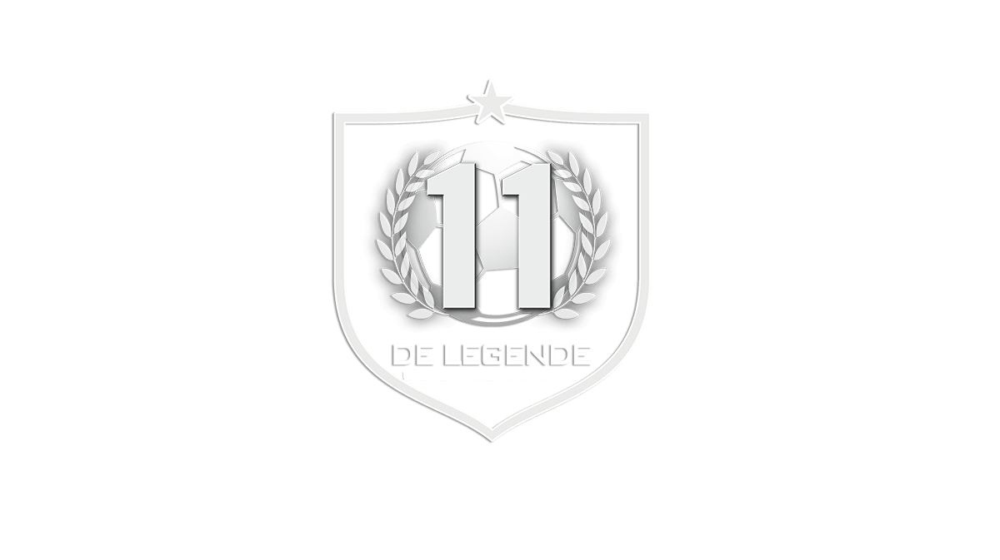

<!DOCTYPE html>
<html lang="fr">
</html>
    <head>
        <meta charset="utf-8" >
        <link rel="stylesheet" href="style.css" />
        <title>Le 11 Type</title>
    </head>
  <body>

    <header class="menu">
      <a id="" href="ligue1.html">
        
      </a>

      <nav>
          <ul>
              <li> 
                  
                  <a class="elMenu" href="ligue1.html">Ligue 1</a>
              </li>
              <li> 
                
                <a class="elMenu" href="premiereLeague.html">Premier league</a>
              </li>
              <li> 
                
                <a class="elMenu" href="liga.html">Liga</a>
              </li>
              <li> 
                
                <a class="elMenu" href="bundesliga.html">Bundesliga</a>
              </li>
              <li> 
                
                <a class="elMenu" href="serieA.html">Serie A</a>
              </li>
          </ul>
      </nav>
      
    </header> 
       
        <section>
                <article>
                  <h3> Gardien: Oliver Kahn </h3>
                 <p>  
                   <br> </br>
                   Gardien autoritaire au très fort caractère, Oliver Kahn était sans doutes le meilleur gardien du monde de son époque. Doté d’un mental solide, il a su se hisser au plus haut niveau à force de travail et de concentration. Très agressif, parfois un peu trop, Kahn a toujours été exemplaire grâce à sa régularité et son tempérament de gagneur.
                   Avec le Bayern de Munich, il a remporté 9 titres nationaux, ainsi que 6 Coupes d’Allemagne et une Coupe UEFA. Mais sa plus belle réussite reste la Ligue des Champions remportée en 2001, après une défaite en finale en 1999. Il réalise 3 arrêts lors des tirs au but, ce qui permet au Bayern de gagner sa première Ligue des Champions depuis 1974.
                   Il a été élu meilleur joueur de la Coupe du Monde 2002 (une première pour un gardien), malgré la défaite face au Brésil de Ronaldo en finale. Oliver Kahn ne gagnera pourtant jamais de compétition internationale avec l’Allemagne en tant que titulaire.
                   
                  
           </p>
          </article>
          
          <article>
            <h3>Latéral droit: Philipp Lahm</h3>
            <p>  
            <br> <br/>
            Considéré comme l’un des meilleurs défenseurs latéraux de son époque, Philipp Lahm débute sa carrière professionnelle en 2001 sous les couleurs du Bayern Munich. Un temps prêté au club voisin du VfB Stuttgart, de 2003 à 2005, le défenseur allemand réintègre très vite l’effectif bavarois pour s’imposer comme un titulaire indiscutable et s’ériger 
            en rempart infranchissable dans la défense munichoise. Vainqueur de la Ligue des champions avec le Bayern Munich pour la première fois en 2013, Philipp Lahm est surtout champion d’Allemagne à cinq reprises entre 2006 et 2014. Finaliste de l’Euro 2008 avec l’équipe nationale d’Allemagne, Philipp Lahm porte régulièrement le brassard de capitaine lors des 
            rencontres internationales, comme ce fut le cas pour l’Euro 2012 et les éditions 2006 et 2010 de la Coupe du monde.
            
        </p>
      </article>
      
      <article>
        
        <h3>Latéral gauche: David Alaba</h3>
        <p> 
        <br> <br/>
        En 2010, l’Autrichien participe pour la première fois à une rencontre de Bundesliga. Il devient alors le plus jeune joueur du club. Étant relativement actif sur le terrain, il est considéré comme étant l’artisan de la qualification de son équipe pour les quarts de finale. 
        Aussi, sa première année est signe de succès puisqu’il remporte deux trophées : la Supercoupe d’Allemagne et le Championnat d’Allemagne.
        En 2011, le footballeur est rapidement prêté à Hoffenheim. Il marque deux buts lors de la saison 2010-2011 et revient au Bayern.
        Lorsque le milieu de terrain revient jouer avec les Munichois il arrive facilement à être titularisé. Deux ans plus tard, celui-ci remporte à nouveau le championnat d’Allemagne, mais aussi le Mondial des Clubs, la Coupe d’Allemagne, la Ligue des champions et la Supercoupe de l’UEFA. 
        Aussi, le joueur gagne 10 fois le championnat d’Allemagne et devient quadruple vainqueur de la Coupe d’Allemagne et quadruple vainqueur de la Supercoupe d’Allemagne. Sept ans plus tard, l’Autrichien gagne de nouveau les tournois du Mondial des Clubs et la Supercoupe d’Europe.
        
          </p>
        </article>
      
      <article>
          
        <h3>Défenseur Central: Franz Beckenbauer</h3>
        <p>        
        <br><br/>
        Aucun autre défenseur de l’histoire ne mérite plus que Franz Beckenbauer le titre de plus grand défenseur central de tous les temps. La légende du Bayern Munich était un leader, un modèle, et surtout un footballeur complet.
        D’abord milieu de terrain en raison de son sang-froid et de sa capacité à dicter le jeu en profondeur, Beckenbauer s’est peu à peu converti en Libero. Ce qui a donné naissance à un nouveau genre de défense dans le monde du football.
        Deux fois Ballon d’or en 1972 et 1976, Beckenbauer a joué 103 matchs en sélection pour Allemagne de l’Ouest et participé à trois Coupes du Monde. Il a d’ailleurs joué un rôle déterminant dans le triomphe de son équipe à la Coupe du Monde 
        1974 et réussit le même exploit en tant qu’entraîneur seize ans plus tard.
        Si sa réputation s’est ternie ces derniers temps en raison d’allégations de corruption, il n’en reste pas moins que « Der Kaiser » est un joueur dont les capacités ne sont pas à remettre en question. Il est déjà entré dans l’histoire 
        comme l’un des meilleurs défenseurs centraux de tous les temps.
       
   
          </p>
          </article>
          
          <article>
        <h3>Défenseur Central: Hans-Georg Schwarzenbeck  </h3>
        <p> 
        <br> <br/>
        Avec le Bayern Munich, club dans lequel il arrive en 1961 et où il a fait l'intégralité de sa carrière professionnelle. Il joue son premier match le 8 octobre 1966 et remporte pour sa première saison la Coupe d'Europe des vainqueurs de coupe (en 1967), 
        bien qu'il ne rentre pas en jeu en finale. Devenu titulaire à part entière dès l'année suivante, il remporte son premier titre de champion d'Allemagne en 1969, prélude à trois victoires, en Coupe d'Europe des clubs champions en 1974, 1975 et 1976, ainsi qu'en Coupe intercontinentale en 1976 contre les Brésiliens de Cruzeiro. 
        En 1974, Schwarzenbeck inscrit le but égalisateur lors de la première manche de la finale européenne contre l'Atlético Madrid, en toute fin de prolongation (1-1 a. p.), d'une frappe lointaine inattendue1. Il fait sa dernière apparition sous le maillot du Bayern le 18 août 1979. Une rupture du tendon d'Achille provoque la fin de sa carrière, 
        bien qu'il reste sous contrat avec le Bayern jusqu'à la fin de la saison 1980-19812.
        Sélectionné de 1971 à 1978 au sein de l'équipe nationale d'Allemagne, il participe à quatre tournois internationaux. Titulaire au poste d'arrière latéral, il remporte le Championnat d'Europe de 1972 puis la Coupe du monde de 1974, à domicile, et atteint la finale du Championnat d'Europe de 1976, perdue aux tirs au but face à la Tchécoslovaquie. 
    
        
       </p>
      
    </article>
      
      <article>
        <h3>Millieu axial: Lothar Matthäus </h3>
        <p> 
        <br> <br/>
        Lothar Matthäus est considéré par beaucoup comme l’un des meilleurs milieux défensifs de l’histoire du football. C’est un véritable meneur d’hommes, puissant physiquement avec une bonne vision du jeu et une volonté de fer. Matthäus se distingue également de par sa frappe de balle puissante et ses aptitudes sur coup de pied arrêté.
        Il a disputé un nombre record de 5 Coupe du Monde, et a aidé la sélection allemande à remporter l’Euro 1980 et surtout la Coupe du Monde 1990 en tant que capitaine. Lothar Matthäus reçoit d’ailleurs le Ballon d’or la même année. Matthäus a joué la plus grande partie de sa carrière comme milieu défensif, mais il pouvait aussi être libéro.
        Légende aussi bien du Bayern de Munich que de l’Inter Milan, il remporte 7 Bundesliga et 3 Coupes d’Allemagne avec les Bavarois, ainsi qu’une Serie A avec l’Inter. Il ajoute à son palmarès 2 Coupe UEFA, une avec chaque club, mais échoue 2 fois en finale de Ligue des Champions, le seul trophée qui lui échappera. Malgré cela, il est tout de même considéré comme l’un des meilleurs joueurs allemands de l’histoire.
        
        </p>
        </article>
      
      <article>
        <h3>Millieu axial: Michael Ballack </h3>
        <p> 
        <br> <br/>
        Considéré comme l'un des meilleurs joueurs allemands de sa génération, Il a été appelé par Karl-Heinz Rummenigge comme « le plus prolifique milieu de terrain dans le monde ». Surnommé der capitaine, Ballack était plus grande icône sportive allemande, symbole, modèle, pour beaucoup d'Allemands, même pour le chancelier Angela Merkel expliquer que la reprise 
        économique de l'Allemagne a déclaré: « Je suis Ballack. ». Il est souvent appelé perpétuellement la seconde, en raison de la multitude recueillie deuxième place avec son club et avec le national.
        Au niveau individuel, il était 3 fois Footballeur allemand de l'année: En 2002, 2003 et 2005. Il a également été insérée en 2002 dans le L'équipe UEFA de l'année et ESM Équipe de l'année en 2001-2002. Avec national teutonique, Il était dans All-Star équipe de monde de Japon-Corée 2002 et Allemagne 2006. Dans le Japon-Corée du monde était, entre autres, 
        la concurrence d'aider l'homme. En 2005, il a remporté le Soulier d'Argent Coupe des Confédérations de la FIFA. Il a également été inséré dans Top 11 Européens en deux éditions différentes: Euros en 2004 et Euros en 2008.
        Il a joué 1995-1997 à Chemnitz, 1997-1999 à Kaiserslautern, puis Bayer Leverkusen jusqu'en 2002, quand il a déménagé à Bayern Monaco jusqu'à 2006. . En carrière Ballack a obtenu: 4 championnats d'Allemagne, une avec Kaiserslautern 1997-1998 trois avec le Bayern à 
        Monaco 2002-2003, 2004-2005 et 2005-2006; 3 tasses de l'Allemagne avec le Bayern en 2002-2003, 2004-2005 et 2005-2006; un Coupe de la Ligue allemande toujours avec le Bayern à Monaco 2004; un Premier League avec Chelsea 2009-2010; 3 FA Cup avec Les Londoniens en 2006-2007, 2008-2009 et 2009-2010; un Coupe de la Ligue en 2006-2007 et Community Shield en 2009. Avec la national allemande, 
        avec qui il a joué 1998-2010, ont totalisé 98 apparitions et 42 buts et commandé par le capitaine 2004 un 2010. Il est situé sur la 8ème place dans le classement de tous les temps des meilleurs buteurs de tous les temps national. Avec l'Allemagne, il a obtenu son diplôme vice-championne du monde en 2002 et vice-champion d'Europe en 2008.
        
        </p>
         </article>
      
      <article>
        <h3>Millieu axial: Mehmet Scholl </h3>
        <p> 
        <br> <br/>
        Durant sa longue carrière, Scholl Mehmet est une véritable idole au sein de son club, le Bayern de Munich, notamment en raison de son habileté technique et de son jeu spectaculaire et déroutant. Il remporte plus de vingt titres avec le Bayern de Munich, affichant un palmarès unique, avec notamment une Ligue des champions en 2001, une Coupe UEFA en 1996 (au cours de laquelle il inscrit un but lors de chaque manche de la finale), et huit titres de champion d'Allemagne. 
        En mai 2005, les fans du Bayern Munich le choisissent parmi onze des meilleurs joueurs que le club ait comptés.
        
        </p>
        </article>
      
      <article>
        <h3>Attaquant Droit: Arjen Robben </h3>
        <p> 
        <br> <br/>
        En 2009 Arjen Robben est transféré au Bayern Munich, découvrant son quatrième championnat. Après une saison où il se montre souvent décisif, il remporte avec le club bavarois la Bundesliga, la Coupe d'Allemagne et dispute une finale perdue de Ligue des champions. Lors de la saison 2011-2012, il réalise de très bonnes performances européennes et nationales avec le Bayern, 
        mais rate un penalty décisif durant les arrêts de jeu de la finale de Ligue des champions, perdue à nouveau, aux tirs au but face à Chelsea cette fois. L'année suivante, Arjen Robben remporte enfin la Ligue des champions, après une troisième finale jouée avec le club bavarois, marquant le but de la victoire face au Borussia Dortmund. Il réalise ainsi un triplé inédit dans l'histoire du club (Bundesliga, Coupe d'Allemagne et Ligue des champions). 
        Il termine 8e puis 4e au classement du Ballon d'or en 2013 et 2014. Le duo d'ailiers qu'il forme avec Franck Ribéry (surnommé « Robbery » par la presse spécialisée) est l'une des caractéristiques du jeu du Bayern Munich.
        
         </p>
        </article>
      
      <article>
        <h3>Attaquant gauche: Franck Ribéry </h3>
        <p> 
        <br> <br/>
        Considéré comme l'un des meilleurs joueurs d'Europe, il remporte le prix du meilleur joueur français de l'année 2007, 2008 et 2013, le Trophée UNFP du meilleur espoir de Ligue 1 en 2006, le prix du meilleur joueur du championnat d'Allemagne en 2008 et 2013, le prix UEFA du meilleur joueur d'Europe en 2013 et termine troisième du Ballon d'or 2013.
        Sa vitesse, sa technique, sa rapidité d'exécution, sa vision du jeu ainsi que sa force de frappe font de lui l'un des leaders du Bayern Munich avec lequel il réalise notamment un quintuplé durant l'année 2013 en remportant le championnat d'Allemagne, la coupe d'Allemagne, la ligue des champions, la supercoupe de l'UEFA et la coupe du monde des clubs. 
        Il est l'un des joueurs les plus titrés de l'histoire de la Bundesliga.
       
       </p>
        </article>
      
      <article>
        <h3>Buteur: Robert Lewandowski </h3>
        <p> 
        <br> <br/>
        Dés son arrivé au BVB, il devient champion dès la première saison, s'impose en Bundesliga comme étant l'un des meilleurs buteurs d'Europe et joue la plus prestigieuse des compétitions continentales, la Ligue des champions. Après avoir remporté quatre trophées avec le Borussia et terminé meilleur buteur du championnat d'Allemagne, Lewandowski s'engage en 2014 au Bayern Munich.
        En 2020, Lewandowski s'illustre notamment pour avoir été le meilleur buteur du Championnat d'Allemagne, de Coupe d'Allemagne, et de Ligue des champions avec notamment un total de 59 buts marqués sur l'ensemble de la saison et terminant meilleur buteur dans toutes les compétitions auxquelles il a participé, constituant à ce jour une première dans l'histoire du football.
        La même année, Robert Lewandowski remporte, le 19 décembre 2020, le prix du Meilleur footballeur de l'année FIFA devant les légendaires Cristiano Ronaldo et Lionel Messi, et succède à l'Argentin. Il est à ce jour le premier footballeur polonais de l'histoire à remporter ce prix. En 2021, Robert gagne le prix du meilleur buteur 2021 France Football.
        </p>
        </article>
        </section>
      </body>
      <hr>
      <footer>
        <a href="https://github.com/rayan33270/projet11legende"> github projet </a>
      </html>